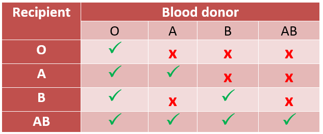

Compatible Blood Donors
How do blood types work?
Your blood group is inherited from genes passed on by your parents.
The two most important blood group systems for transfusion are ABO and Rh.
The ABO group system gives the letter part of your blood type and Rh system gives the positive or negative part.
Compatible blood types:

A blood transfusion is safest when the blood type of the transfused blood matches the recipient's blood type and Rh status (in other words, the blood types are compatible). Therefore, before a transfusion, blood banks do a test called a type and cross-match on the donor's and the recipient's blood. This test minimizes the chance of a dangerous or possibly fatal reaction.
In addition, the recipient's blood is checked for certain antibodies to red blood cells. Such antibodies can cause a reaction to transfused blood.
However, in an emergency, anyone can receive type O red blood cells. Thus, people with type O blood are known as universal donors. People with type AB blood can receive red blood cells from a donor of any blood type and are known as universal recipients.
Recipients whose blood is Rh-negative must receive blood from Rh-negative donors (except in life-threatening emergencies), but recipients whose blood is Rh-positive may receive Rh-positive or Rh-negative blood.
Which blood types are compatible?
You can receive blood from a donor with the same blood type as you.
You can also receive blood from a donor with a compatible blood type.
Similarly, a person with a different blood type to you may be able to safely receive your blood.
O negative blood is known as the universal blood type because it is safe for everyone to receive O negative red cells.
The table below shows compatibility of blood types.
Compatibility Table:
